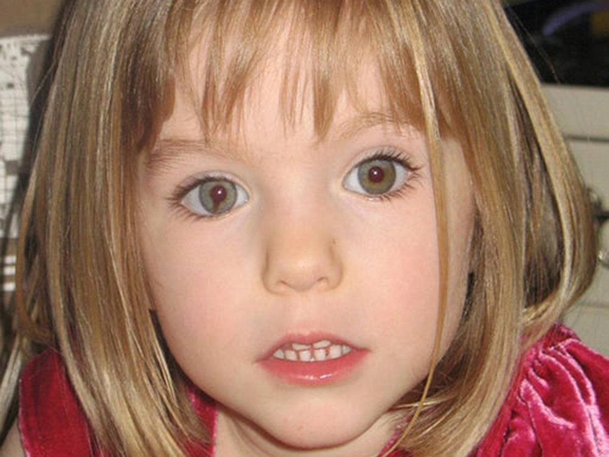
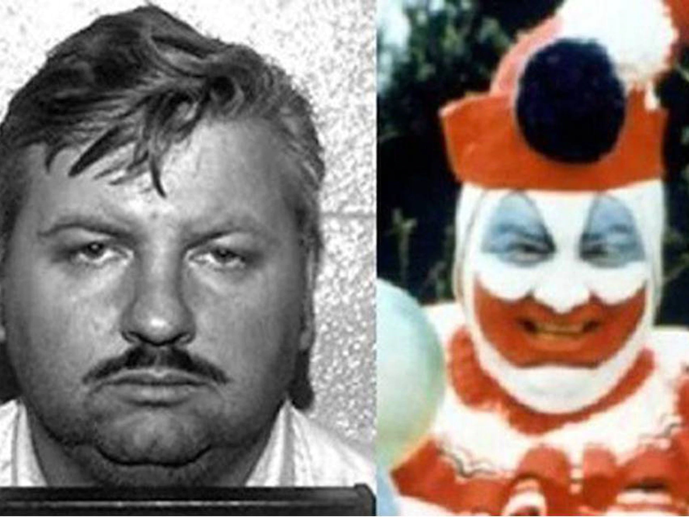

<DOCTYPE html>

  <head>
    <meta charset="utf-8">
    <title> Marta del Castillo </title>
  </head>

<p></img><p>

<style>


/*Colocamos una imagen de fondo al 'body' de nuestras páginas*/

body {  
  
  background-color: #777; 
}


/*Creamos la clase 'center' de forma que podamos centrar, por ejemplo, las tablas de nuestras páginas*/

.center{

	margin-left: auto;
	margin-right: auto;
}


/*Le damos formato a los encabezados H1*/
h1 {
  font-weight: bold;
  text-align: center;   
  font-family: Monaco, "Bitstream Vera Sans Mono", "Lucida Console", Terminal, monospace;
  color: #fff;
  
}

h2 {

  font-weight: bold;
  text-align: left;  
  font-family: Monaco, "Bitstream Vera Sans Mono", "Lucida Console", Terminal, monospace;
  color: white 	;

}

p, ul {

  font-family: Verdana, Helvetica, sans-serif;
  color: #fff;
  font-size: 12px; 

}


/*Le damos formato a los pies de imagen*/
figcaption {

  text-align: center;
}


/*Le damos formato a las imágenes*/
img {
  
  display: block;
  width: 50px;
  height: 50px;
  width: 100%;

}

</style>


<table border = '10' class= 'center' >  

<tr>
	<td><a href = 'html/alcasser.html'> <figcaption> Alcasser </figcaptaion></a></td>
                
	
           
        <td><a href = 'html/fania.html'> <figcaptaion> Fania</figcaptation></a></td>
	
 	<td><a href = 'html/maddeleine.html'>  <figacaptation> Maddeleine</figcaptation></a></td>
	
</tr>

<tr> 
	 <td><a href = 'html/mariluz.html'> <figcatation> Mariluz</figcaptation></a></td>

	 <td><a href = 'html/casa.html'> <figcaptation> Casa</figcaptation></a></td>
	
       	 <td><a href = 'html/pogo.html'> <figcaptation> Pogo</figcaptation></a></td>
               
</tr>
</html>
<body>
<h1> Maria del Castillo </h1>
<h2> Caso Marta del Castillo es el nombre con el que se conoce a los sucesos referentes a la desaparición y el asesinato de la joven Marta del Castillo Casanueva (Sevilla, 19 de julio de 1991 – Sevilla, c. 24 de enero de 2009), en Sevilla, Andalucía, España.

El caso despertó el interés de la sociedad y medios de comunicación de España, ya que hasta en cuatro ocasiones los acusados afirmaron sucesivamente que el cuerpo se encontraba en distintas zonas, como el río Guadalquivir, un vertedero o la localidad de Camas.

Actualmente, el cuerpo de la joven sigue en paradero desconocido, y el principal acusado, Miguel Carcaño, en cuya chaqueta se encontró sangre de Marta del Castillo,1​ ha dado hasta 7 versiones de los hechos.2 </h2>

